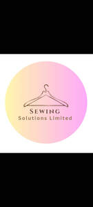

Trade Mark Journal No.2026/010 6 March 2026
UK00004340837 14 February 2026 (14,20,24,25,35,40,45)

- Class 14
- Dress watches; Dress ornaments in the nature of jewellery; Bridal headpieces in the nature of tiaras; Leather jewelry boxes; Jewellery, including imitation jewellery and plastic jewellery; Items of jewellery; Jewellery items; Trinkets [jewellery]; Plastic bracelets in the nature of jewelry; Wristlets [jewellery]; Trinkets [jewelry]; Pearls [jewellery]; Jewellery products; Jewellery chain of precious metal for necklaces; Necklaces [jewellery]; Ornaments [jewellery]; Synthetic stones [jewellery]; Jewellery charms; Pearls [jewelry]; Jewelry boxes of precious metal; Jewelry brooches; Jewellery chain of precious metal for anklets; Brooches [jewellery]; Jewellery being articles of precious stones; Articles of jewellery with precious stones; Charms [jewellery] of common metals; Jewellery; Decorative pins [jewellery]; Trinkets [jewellery, jewelry (Am.)]; Small jewellery boxes of precious metals; Clothing ornaments of precious metals; Jewelry charms; Parts and fittings for jewellery; Pendants [jewellery]; Jewellery chains; Chains [jewellery]; Necklaces [jewelry]; Jewellery made of semi-precious materials; Ornaments for clothing [of precious metal]; Jewellery in semi-precious metals; Jewellery fashioned of semi-precious stones; Amulets [jewellery]; Key chains as jewellery [trinkets or fobs]; Jewelry boxes, not of precious metal; Chains made of precious metals [jewellery]; Rings being jewellery; Rings [jewellery]; Jewellery incorporating pearls; Pearls [jewellery, jewelry (Am.)]; Jewellery incorporating precious stones; Plastic costume jewellery; Imitation jewellery ornaments; Jewelry; Scarf clips being jewelry; Jewelry chains; Ornaments [jewellery, jewelry (Am.)]; Jewellery rope chain for necklaces; Rings [jewellery] made of precious metal; Jewellery rope chain for bracelets; Precious jewellery; Costume jewellery; Fashion jewellery; Jewellery hat pins; Natural gem stones; Natural pearls; Precious and semi-precious gems; Gems; Jewellery chain of precious metal for bracelets; Chalcedony used as gems; Gold bracelets; Semi-precious gemstones; Bracelets [jewelry]; Bracelets of precious metal; Gemstones; Gemstones, pearls and precious metals, and imitations thereof; Bracelets [jewellery]; Cuff links of precious metals with semi-precious stones; Bracelets; Artificial gem stones; Cuff links made of precious metals with semi-precious stones; Precious gemstones; Artificial gemstones; Identification bracelets of precious metal [jewelry]; Artificial stones [precious or semi-precious]; Charms [jewelry]; Charms for jewelry; Silver bracelets; Bracelet charms; Ornaments, made of or coated with precious or semi-precious metals or stones, or imitations thereof; Synthetic precious stones; Charms [jewellery]; Charms for jewellery; Necklaces of precious metal; Precious and semi-precious stones; Jewelry charms in precious metals or coated therewith; Gold necklaces; Cuff links made of precious metals with precious stones; Bead bracelets; Key charms of precious metals; Statues and figurines, made of or coated with precious or semi-precious metals or stones, or imitations thereof; Necklace charms; Jewellery made of precious stones; Chain mesh of precious metals [jewellery]; Jewel pendants; Bangle bracelets; Olivine [gems]; Amber pendants being jewellery; Key charms coated with precious metals; Tourmaline gemstones; Cases of precious metals for jewels; Jewelry boxes of precious metals; Tanzanite being gemstones; Silver-plated bracelets; Wooden bead bracelets; Identification bracelets [jewelry]; Precious jewels; Key rings [trinkets or fobs] of precious metal; Jewellery fashioned of precious metals; Amulets [jewelry]; Man-made pearls; Earrings of precious metal; Bracelets [jewellery, jewelry (Am.)]; Jewels; Semi-precious stones; Pendants [jewelry]; Jewellery boxes of precious metals; Chain mesh of semi-precious metals; Spinel [precious stones]; Gold plated bracelets; Jewellery stones; Silver necklaces; Statuettes made of semi-precious stones; Imitation precious stones; Threads of precious metal [jewelry]; Articles of jewellery with ornamental stones; Jewelry cases of precious metal; Charms [jewellery, jewelry (Am.)]; Crucifixes of precious metal, other than jewelry; Agate as jewellery; Jewellery made of crystal coated with precious metals; Ear ornaments in the nature of jewellery; Statuettes made of semi-precious metals; Friendship bracelets; Jewellery incorporating diamonds; Artificial jewellery; Jewellery in precious metals; Jewellery of precious metals; Lapel pins of precious metals [jewellery]; Jewellery made of precious metals; Jewellery boxes of precious metal; Jewellery fashioned from non-precious metals; Jewellery in the form of beads; Rings [jewellery] made of non-precious metal; Bracelets made of embroidered textile [jewelry]; Necklaces; Articles of jewellery made of precious metals; Amulets being jewellery.
- Class 20
- Clothes hangers, clothes stands [furniture] and clothes hooks; Fittings for curtains; Bamboo curtains; Curtains (Bamboo -); Poles for curtains; Bead curtains; Curtain tie-backs; Rings for curtains; Rods for net curtains; Indoor blinds, and fittings for curtains and indoor blinds; Decorative bead curtains; Bead curtains for decoration; Curtains (Bead -) for decoration; Support rods for curtains; Curtain fittings; Window shades [blinds]; Curtain tie-backs, not of textile; Indoor window blinds [shades] [furniture]; Blinds (Indoor window -) [shades] furniture; Curtain rods; Rods (Curtain -); Shower curtain rods; Window blinds; Curtain embraces for holding back curtains; Indoor window blinds [shades]; Support rails for curtains; Shower curtain hooks; Curtain hooks; Hooks (Curtain -); Curtain embraces of plastics for holding back curtains; Window blinds [interior]; Curtain rollers; Rollers (Curtain -); Indoor window blinds [shade] furniture; Indoor window blinds [shade] [furniture]; Interior textile window blinds; Curtain embraces of metal for holding back curtains; Curtain poles; Curtain holdbacks, not of textile; Blackout blinds [slatted, indoor]; Curtain rails; Rails (Curtain -); Indoor window blinds [furniture]; Shower curtain rails; Slatted indoor blinds for windows; Indoor window blinds of textile; Blackout blinds [indoor]; Indoor window blinds; Window blinds [indoor]; Curtain pins; Venetian blinds; Bamboo blinds; Indoor window blinds of woven wood; Expanding rails of plastics for net curtains; Indoor window blinds of paper; Horizontal venetian blinds [indoor] for doors; Interior venetian blinds; Curtain runners; Wooden blinds; Brackets of (Non-metallic -) for hanging window draperies; Pillows; Beds, bedding, mattresses, pillows and cushions; Stuffed pillows; Bedding for cots [other than bed linen]; Bamboo pillows; Bedding for nursery cots [other than bed linen]; Nap mats [cushions or mattresses]; Bedding, except linen; Fitted fabric furniture covers; Scented pillows; Latex pillows; Inflatable pillows; Accent pillows; Bean bag pillows; Bath pillows; Throw pillows; Maternity pillows; U-shaped pillows; Storage boxes for pillows [furniture]; Soft furnishings [cushions].
- Class 24
- Knitted elastic fabrics for gymnastic dresses; Fabrics for shirts; Lingerie fabrics; Jersey fabrics for clothing; Knitted elastic fabrics for ladies underwear; Lace fabrics; Lace fabrics ; Tulle for dressmaking; Shirt fabrics; Knitted elastic fabrics for bodices; Textile fabrics for lingerie; Precut fabrics for needlecraft; Fabrics being textile piece goods for use in embroidery; Embroidery fabric; Textile fabrics; Quilts of textile; Textile fabric; Textile fabrics for the manufacture of clothing; Doilies of textile; Textile fabrics for making into clothing; Patterned textiles for use in embroidery; Textile fabrics for use in the manufacture of pillowcases; Bedroom textile fabrics; Tulle for hatmaking; Textile fabrics for making up into household textile articles; Fabrics being textile piece goods for use in patchwork; Textile fabrics for use in the manufacture of sportswear; Textile fabrics in the piece; Textile fabrics for use in manufacture; Napery of textile; Napery [textile]; Fabrics for textile use; Textile fabrics for use in the manufacture of curtains; Lingerie fabric; Batik fabrics; Woollen fabrics; Non-woven textile fabrics for use as interlinings; Furnishing fabrics being textile piece goods; Silk fabrics for printing patterns; Hand-towels made of textile fabrics; Textile tablecloths; Tablecloths of textile; Textile fabrics for use in the manufacture of furniture; Textile piece goods for making-up into clothing; Fabrics being textile piece goods; Muslin fabric; Knit lace fabrics; Woollen fabric; Silk fabric for printing patterns; Textile used as lining for clothing; Textile fabric piece goods for use in the manufacture of clothing; Textile fabrics for use in the manufacture of bedding; Handkerchiefs of textile; Textile handkerchiefs; Fabrics being textile piece goods for use in tapestry; Waterproof textile fabrics; Curtains made of textile fabrics; Reinforced fabrics [textile]; Textile fabrics for making into linens; Curtains; Curtains for windows; Window curtains; Fabric curtains; Pleated curtains; Blackout curtains; Swags [curtains]; Door curtains; Shower curtains; Curtains and lace curtains of textiles or plastic; Lace curtains; Drapes in the nature of curtains; Curtains for showers; Vinyl curtains; Curtains of textile; Moquettes [curtains]; Net curtains; Curtains of plastic; Drapes; Curtain fabrics; Draperies [thick drop curtains]; Shower room curtains; Textile curtain pelmets; Fabrics for making curtains; Curtain fabric; Fire-retardant textile shower curtains; Curtain valences; Curtain tie-backs of textile; Curtains of textiles or plastic; Shower curtains of textile or plastic; Valances [textile draperies]; Curtain linings; Curtains of textile or plastic; Fabric bed valances; Draperies; Curtain holdbacks of textile; Curtains of textile material; Drapes in the nature of curtains made of textile materials; Fabric valances; Bed valances; Curtains made of plastics; Curtain holders or tiebacks of textile; Valances; Ready made curtains of textiles; Curtains made of plastics for use in shower baths; Shower curtains made of plastic material; Valances for beds; Pelmets; Ready made curtains; Drapery; Valance sheets; Curtains made from textile materials; Curtains made of textile materials; Coverings for windows; Curtain material; Window furnishing fabrics; Pillowcases [pillow slips]; Quilted blankets [bedding]; Ticks (mattress and pillow coverings); Silk bed blankets; Shams (Pillow -); Pillow shams; Pillow covers; Covers for pillows; Bed linen and blankets; Duvet covers; Covers for eiderdown and duvets; Pillow cases; Bed blankets made of cotton; Textile piece goods for making bedding covers; Oilcloth for use as tablecloths; Textile piece goods for making curtains; Sofa blankets; Quilt bedding mats; Textile covers for duvets; Canopies (bed linen); Bed clothes and blankets; Crib bumpers [bed linen]; Bed blankets; Blankets (Bed -); Fitted toilet lid covers [made of fabric or fabric substitutes]; Silk blankets; Covers for duvets; Bedspreads; Bed linen and table linen; Bedsheets; Table covers of damask; Pillow slips; Textile piece goods for making cushion covers; Coverlets [bedspreads]; Bed sheets of plastic [not being incontinence sheets]; Bed sheets of plastic, not being incontinence sheets; Cot bumpers [bed linen]; Fabrics for use in covering armchairs; Textile napkins [table linen]; Bedsheets of leather; Protective loose covers for mattresses and furniture; Woven fabrics for cushions; Linen lining fabric for shoes; Tablecloths, not of paper; Cotton blankets; Bed linen; Linen for the bed; Linen (Bed -); Paper pillowcases; Textile fabrics for making into blankets; Tablecloths of textiles; Covers for toilet lids of fabric; Comforters (bedding); Fabrics made from linen, other than for insulation; Bed covers of paper; Unfitted fabric furniture covers; Linen [fabric]; Unfitted fabric slipcovers for furniture; Eiderdowns [down coverlets]; Mattress covers; Silk fabrics for furniture; Bed quilts; Table covers of non-woven textile fabrics; Eiderdown covers; Nightdress cases of textile; Pillowcases; Covers for mattresses; Glass cloths [towels]; Valanced bed sheets; Fitted toilet covers [fabric]; Cloth doilies; Fabrics for use as linings in clothing; Fabric for use in the manufacture of clothing; Sew-on tags of textile for clothing; Fabric linings for clothing; Elastic fabrics for clothing; Apparel fabrics; Textile piece goods for clothing; Materials for use in making clothes; Textiles for making articles of clothing; Textile piece goods for making into clothing.
- Class 25
- Dresses; Bridesmaid dresses; Pinafore dresses; Wedding dresses; Maternity dresses; Cocktail dresses; Collars for dresses; Jumper dresses; Leather dresses; Dresses for evening wear; Evening dresses; Dress shirts; Nurse dresses; Tennis dresses; Gowns; Shift dresses; Dress shoes; Bridal gowns; Ladies' dresses; Dress pants; Dress suits; Fancy dress costumes; Wedding gowns; Blouses; Dressing gowns; Dresses made from skins; Women's ceremonial dresses; Playsuits [clothing]; Pleated skirts for formal kimonos (hakama); Bridesmaids wear; Imitation leather dresses; Skirt suits; Christening gowns; Bodices [lingerie]; Skirts; Sundresses; Bandeaux [clothing]; Nightgowns; Pleated skirts; Dress shields; Shields (Dress -); Sleeveless jackets; Evening gowns; Veils [clothing]; Clothes; Denims [clothing]; Culotte skirts; Corsets [clothing, foundation garments]; Frock coats; Romper suits; Skating outfits; Bridal garters; Strapless bras; Dresses for infants and toddlers; Party hats [clothing]; Tops [clothing]; Jumpsuits; Headbands [clothing]; Headbands for clothing; Costumes for use in children's dress up play; Shorts [clothing]; Shirts for suits; Capes (clothing); Strapless brassieres; Ready-to-wear clothing; Cardigans; Petticoats; Caftans; Night gowns; Ladies wear; Jackets [clothing]; Leggings [trousers]; Sashes for wear; Tunics; Tuxedos; Nightdresses; Kimonos; Quilted jackets [clothing]; Bottoms [clothing]; Kaftans; Babies' pants [clothing]; Camisoles; Ball gowns; Maternity shirts; Bathing costumes for women; Aprons [clothing]; Fashion hats; Underskirts; Gussets for bathing suits [parts of clothing]; Wedding garters; Silk clothing; Gussets for leotards [parts of clothing]; Foulards [clothing articles]; Nappy pants [clothing]; Sleeved jackets; Bra straps [parts of clothing]; Sleeveless jerseys; Jogging outfits; Capelets; Shoes for casual wear; Costumes; Kendo outfits; Millinery; Hairdressing capes; Knitwear [clothing]; Leather belts [clothing]; Belts [clothing]; Belts for clothing; Belts (Money -) [clothing]; Money belts [clothing]; Fabric belts [clothing]; Parts of clothing, footwear and headgear; Clothing for leisure wear; Kerchiefs [clothing]; Embroidered clothing; Linen clothing; Jerseys [clothing]; Maternity clothing; Furs [clothing]; Woolen clothing; Cashmere clothing; Gloves [clothing]; Layettes [clothing]; Clothing layettes.
- Class 35
- Retail services connected with the sale of clothing and clothing accessories; Retail services in relation to clothing accessories; Mail order retail services for clothing accessories; Retail services in relation to fashion accessories; Mail order retail services connected with clothing accessories; Wholesale services relating to clothing; Wholesale services in relation to clothing; Retail services relating to clothing; Retail services in relation to clothing.
- Class 40
- Dressmaking; Needlework and dressmaking; Tailoring or dressmaking; Sewing; Custom tailoring or dressmaking; Sewing services; Sewing of curtains; Embroidery [embroidering]; Quilting; Cutting-out of fabrics; Sewing (custom manufacture); Textile weaving; Textile cutting; Dyeing (Textile -); Textile printing; Services for the dyeing of fabrics; Textile and fabric treating; Rental of sewing machines; Embroidery services; Textile finishing; Embroidering; Cutting of curtains; Clothing alterations; Clothing alterations [custom manufacture]; Custom clothing alteration.
- Class 45
- Rental of dresses; Rental of evening dresses; Rental of bridal gowns; Dress rental; Evening dress rental.
Sewing Solutions Limited